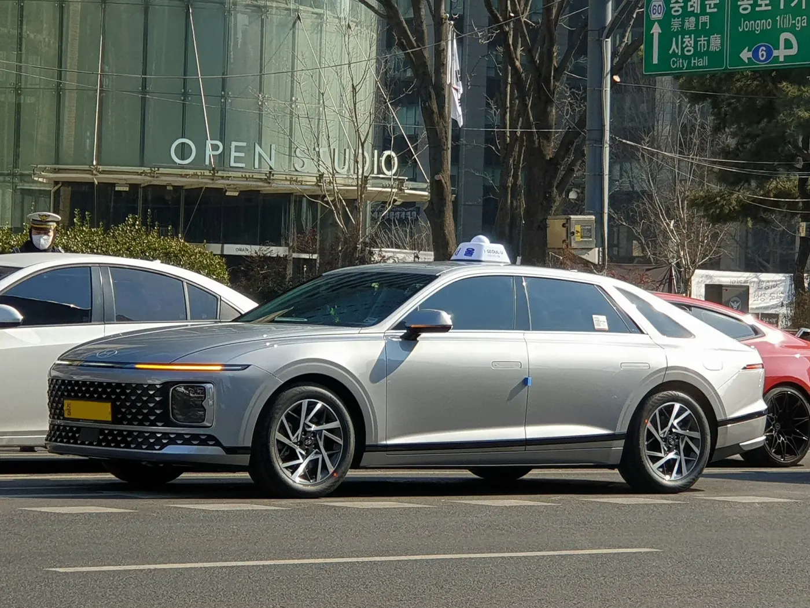
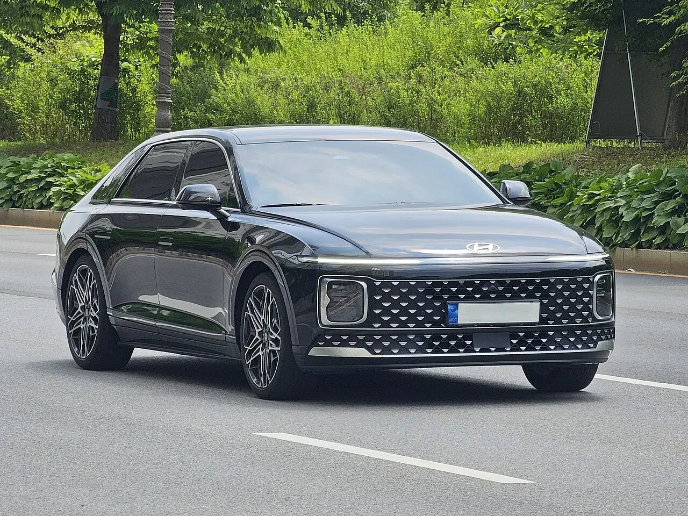
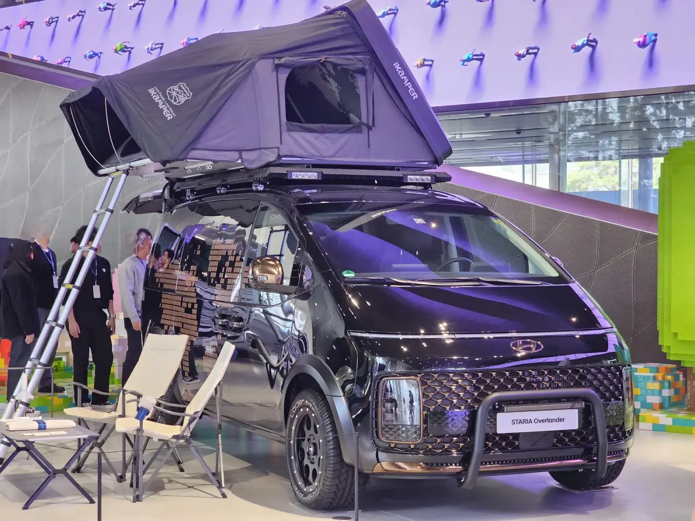
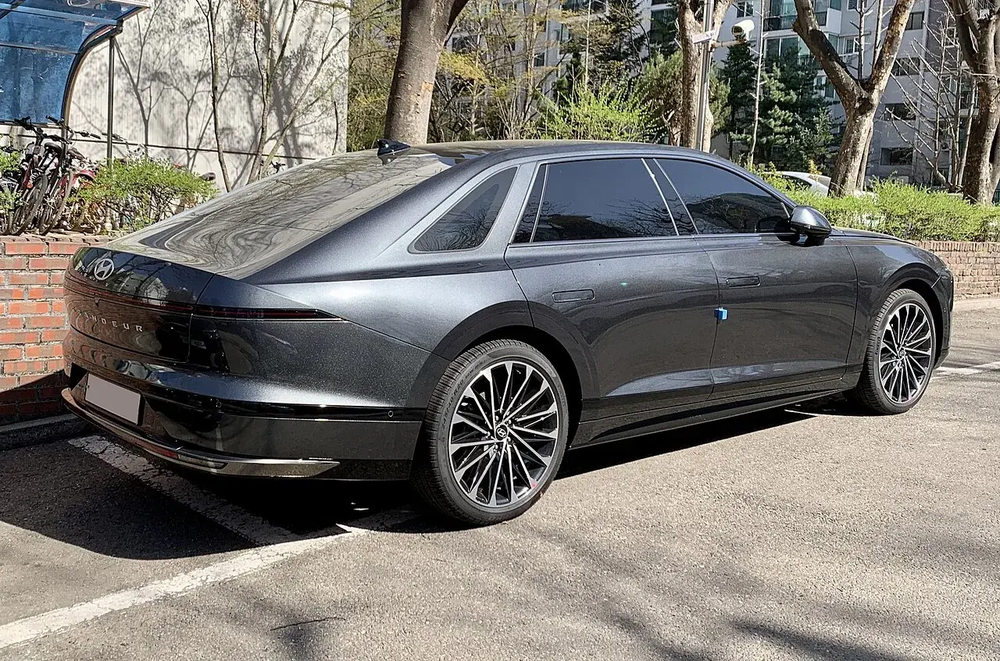

▲ 현대 그랜저(GN7). SBS 드라마 '모범택시3'에서 주인공 김도기(이제훈)의 메인 차량으로 등장한다 ⓒ 현대자동차
SBS 금토드라마 '모범택시3'가 2025년 11월 21일 첫 방송을 앞두고, 극 중 주인공 김도기(이제훈)의 차량이 현대차 그랜저로, 비밀 택시회사 무지개운수의 작전 차량이 스타리아로 확정됐다는 소식이 2025년 11월 19일 일제히 보도됐습니다. 파이낸셜뉴스·문화일보·서울경제 등은 이를 현대차와 SBS 제작진이 맺은 정식 PPL(간접광고)로 전했고, 현대차그룹 뉴스룸도 같은 날 공식 소식으로 이를 확인했습니다. 흥미로운 지점은 차량 자체보다 왜 하필 지금 그랜저인가입니다. 시즌1·2에서 복수극의 얼굴이었던 김도기가 시즌3에서는 '사회 정의를 실현하는 인물'로 캐릭터를 바꾸는데, 공교롭게도 그가 타는 차 역시 시리즈 사상 처음으로 PPL 계약을 맺은 현역 최신 모델로 바뀌었습니다.
1. 무엇이 보도됐나 — 그랜저는 도기의 차, 스타리아는 무지개운수의 차

▲ 준대형 세단을 택시로 활용하는 사례는 국내에서 드물지 않다. '모범택시' 시리즈의 설정 자체가 개인택시 기사로 위장한 요원이라는 점에서 이런 실제 사례와 맞닿아 있다 ⓒ 현대자동차
보도를 정리하면 이렇습니다. 파이낸셜뉴스와 문화일보는 2025년 11월 19일, 현대차가 '모범택시3'와 진행한 PPL의 구체적 배치를 전했습니다. 극 중 무지개운수 소속 개인택시 기사로 위장한 주인공 김도기의 메인 차량이 그랜저이고, 팀원들이 작전에 투입될 때 쓰는 무지개운수의 작전 차량이 스타리아라는 내용입니다. 여기에 쏘나타 택시 등 현대차의 다른 라인업도 극 중 다양한 택시로 함께 등장한다고 전했습니다. 현대차그룹 뉴스룸도 같은 날 이를 공식 소식으로 확인하면서 "시청자들이 드라마 속 차량을 통해 현대차의 기술력과 브랜드 가치를 자연스럽게 경험할 수 있기를 바란다"는 입장을 전했습니다.
단순 협찬 이상의 공을 들인 정황도 있습니다. 인사이트·서울경제 등에 따르면 SBS는 방영 이틀 전인 11월 15일 공식 유튜브 채널 '스브스캐치'에 그랜저를 고른 배경을 담은 스핀오프 영상을 따로 공개했습니다. 영상에는 무지개운수 멤버인 최 주임(장혁진)과 박 주임(배유람)이 과거 상견례 자리에서 앞으로 태어날 조카에게 선물하고 싶은 '꿈의 차'를 함께 상상하는 장면이 담깁니다. 이후 조카는 비극적 사건으로 태어나지 못하지만, 그들이 그렸던 바로 그 차가 그랜저로 구현돼 무지개운수의 핵심 차량이 됐다는 설정입니다. 단순히 차를 출연시키는 데 그치지 않고, 왜 이 차여야 했는지에 대한 서사를 별도로 만들어 배포했다는 점에서, 이번 PPL이 상당히 공들인 기획이라는 것을 짐작할 수 있습니다.
| 항목 | 내용 | 출처 |
|---|---|---|
| 주인공 김도기의 차 | 현대 그랜저(GN7) | 파이낸셜뉴스·문화일보·현대차그룹 뉴스룸 |
| 무지개운수 작전 차량 | 현대 스타리아 | 파이낸셜뉴스·문화일보·인사이트·서울경제 |
| 그 외 등장 차량 | 쏘나타 택시 등 현대차 라인업 | 파이낸셜뉴스·문화일보 |
| 보도 시점 | 2025년 11월 19일 일제 보도 | 공통 |
| 방영 시작 | 2025년 11월 21일(SBS 금·토) | 공통 |
| 스핀오프 공개 | 11월 15일, SBS 유튜브 '스브스캐치' | 인사이트·서울경제 |
| 협찬 계약 금액 | 보도로 확인되지 않음 | — |
2. 복수극에서 사회 정의 실현자로 — 시즌마다 바뀐 차, 시즌마다 바뀐 도기

▲ 더 뉴 그랜저(GN7). '모범택시' 시리즈에서 김도기가 정식 PPL 계약을 맺은 현역 최신 모델을 타는 것은 시즌3가 처음이다 ⓒ Damian B Oh, Wikimedia Commons (CC BY-SA 4.0)
'모범택시' 시리즈는 시즌을 거듭할 때마다 주인공이 타는 차도 함께 바뀌어 왔습니다. 나무위키의 시즌별 등장 차종 정리에 따르면 시즌1(2021년)에서 김도기가 몰던 무지개운수의 상징 차량 '5283'은 이미 단종된 현대 다이너스티(LX)였고, 팀원들의 위장용 장비 차량은 기아 프레지오였습니다. 이 시즌은 방송 제작지원 없이 만들어져, 등장 차량이 브랜드 마케팅과는 무관하게 극의 설정에 따라 골라졌습니다. 시즌2(2023년)에서는 3화부터 다이너스티 대신 1세대 제네시스(BH, 전기형)가 김도기의 메인 차량으로 등장했고, 위장 콜밴은 현대 그랜드 스타렉스(3세대)로 바뀌었습니다. 두 시즌 모두 이미 단종됐거나 수십 년 전 모델이라는 공통점이 있습니다. 이는 시리즈 초반 김도기가 음지에서 움직이는 복수의 대행자였다는 설정과도 맞물립니다. 낡고 눈에 띄지 않는 차, 정식 브랜드 협찬 없이 극의 필요에 따라 고른 차라는 점이 '보이지 않는 곳에서 사적 복수를 대행한다'는 초반 시리즈의 정체성과 어울립니다.
| 시즌 | 김도기의 차 | 이동·작전 차량 | 비고 |
|---|---|---|---|
| 시즌1(2021) | 현대 다이너스티(LX, 단종) | 기아 프레지오(위장용) | 방송 제작지원 없음 |
| 시즌2(2023) | 현대 제네시스 1세대(BH, 전기형) | 현대 그랜드 스타렉스 3세대(위장 콜밴) | 3화부터 차량 교체 |
| 시즌3(2025~) | 현대 그랜저(GN7, 현역 모델) | 현대 스타리아(현역 모델) | 현대차 정식 PPL |
※ 시즌1·2 차량 정보는 나무위키의 시즌별 등장 차종 문서를 근거로 했으며, 방송사·제작사의 공식 보도자료로 재확인되지는 않았습니다.
SBS와 언론 보도가 전하는 시즌3의 방향은 뚜렷합니다. 김도기는 더 이상 사적인 원한을 대신 갚아주는 해결사가 아니라, 제도권 밖에서 사회 정의를 실현하는 인물로 캐릭터의 무게 중심이 옮겨갑니다. 이 변화와 나란히 놓고 보면, 단종차·구형차에서 현재 판매 중인 최신 플래그십 세단으로 갈아탄 것은 우연이라기보다 캐릭터의 사회적 위치 변화를 시각적으로 뒷받침하는 장치에 가깝습니다. 음지의 복수극에는 낡고 눈에 띄지 않는 차가, 공개적으로 정의를 실현하는 인물에게는 대중이 성공과 신뢰의 상징으로 읽어온 그랜저가 어울린다는 계산입니다. 이 시리즈에서 이미 다룬 '김 부장 이야기' 속 그랜저 역시 '대기업 부장의 성공'을 설명하는 장치로 쓰였다는 점을 떠올리면, 그랜저가 대중이 즉각 알아보는 신뢰·성공의 기호로 여러 작품에서 반복 소환되고 있다는 사실이 확인됩니다.
3. 도기의 세단, 그랜저 GN7 뜯어보기

▲ 도로를 주행 중인 그랜저 GN7. 2026년 5월 부분변경을 거쳐 '더 뉴 그랜저'로 이름을 이었다 ⓒ 현대자동차
극 중 도기가 타는 차가 정확히 부분변경 전후 어느 모델인지는 보도로 특정되지 않았지만, 현재 판매 중인 그랜저는 2026년 5월 14일 출시된 부분변경 모델 '더 뉴 그랜저'입니다. CarPrism이 앞서 국내외 시승기 11편을 종합한 기사에 따르면, 가격은 9월 공식 가격표 기준 2.5 가솔린 4,245만원, 3.5 가솔린 4,491만원, 하이브리드 4,833만원(세제혜택 후)부터 시작합니다. 하이브리드는 시스템 최고출력 239마력에 공인 복합연비 18.4km/L(18인치 기준)를 냅니다. 시승기 10편 모두가 승차감·정숙성을 공통 장점으로 꼽았고, 2.5 가솔린의 가속력 부족은 반복적으로 지적된 약점입니다.

▲ 더 뉴 그랜저의 실내. 운전석 앞 9.9인치 슬림 디스플레이와 17인치 플레오스 커넥트 화면이 특징이다 사진=현대자동차
드라마 설정과 연결지어 보면, 그랜저는 극 중 도기가 평범한 개인택시 기사로 위장한 채 일상적으로 몰고 다녀야 하는 차입니다. 눈에 띄지 않으면서도 조수석·뒷좌석에 의뢰인을 태워야 하고, 장시간 잠복·이동에도 피로가 덜해야 합니다. CarPrism이 종합한 리뷰들이 공통으로 꼽은 정숙성과 승차감은 이런 용도에 실제로 부합하는 특성입니다. 준대형 세단이면서도 국내에서 가장 흔하게 마주치는 차종 중 하나라는 점 역시, 잠입 수사에 가까운 도기의 이동 수단으로는 오히려 위장에 유리한 조건입니다. (관련 기사: [시승기 종합] '부장님 차' 너머의 그랜저… 국내외 리뷰 11편이 입 모은 것과 엇갈린 것)
4. 무지개운수의 이동 기지, 스타리아

▲ 현대 스타리아. 박스형 차체로 실내 높이가 높아 장비를 세워 싣거나 여러 명이 동시에 이동하기에 유리하다 ⓒ 현대자동차 공식 이미지
무지개운수의 작전 차량으로 스타리아가 낙점된 배경도 어렵지 않게 짐작할 수 있습니다. 스타리아는 국내 자동차 정보 매체 종합 기준 투어러 트림이 3,502만~3,999만원대에 형성돼 있고, 2026년형부터는 1.6 터보 하이브리드 파워트레인이 새로 추가돼 카니발 하이브리드와 정면 경쟁하는 구도입니다. CarPrism이 앞서 다룬 카니발 하이브리드 대 스타리아 하이브리드 비교 기사에서도 확인했듯, 스타리아는 넓은 실내와 박스형 차체가 강점인 모델입니다. 9인승·11인승까지 좌석 구성을 바꿀 수 있어, 극 중 설정처럼 장비를 싣고 여러 팀원이 함께 이동하는 '이동 기지' 역할에 실제로도 적합한 차종입니다. (관련 기사: "245마력은 같은데 연비는 다르다"… 카니발 하이브리드 vs 스타리아 하이브리드)

▲ 현대 모터스튜디오 고양에 전시된 스타리아 오버랜더 콘셉트(2024년 4월 촬영). 스타리아는 좌석 구성과 적재 방식을 다양하게 바꿀 수 있는 차체 구조가 특징이다 ⓒ Damian B Oh, CC BY-SA 4.0, Wikimedia Commons
다만 드라마 속 스타리아가 정확히 어떤 트림·파워트레인인지는 보도로 확인되지 않았습니다. 시즌2에서 위장 콜밴으로 쓰였던 그랜드 스타렉스가 의뢰에 따라 외장 데칼을 바꿔가며 등장했던 것처럼, 시즌3의 스타리아 역시 극 중 필요에 따라 여러 사양으로 등장할 가능성이 있습니다. 이 부분은 방영 후 실제 화면으로 확인이 필요합니다.
5. 현대차가 이 PPL로 노리는 것

▲ 그랜저 GN7 후측면. 그랜저는 여러 드라마에서 반복적으로 성공·신뢰를 상징하는 차로 소환되고 있다 ⓒ Benespit, CC BY-SA 4.0, Wikimedia Commons
현대차 입장에서 이번 PPL의 실익은 판매 시점과 맞물려 있습니다. CarPrism이 정리한 8월 판매실적에 따르면 그랜저는 노조 파업에 따른 생산 차질 속에서도 2026년 8월 국내 5,931대가 팔려 현대차 세단 가운데 가장 많이 팔린 모델 자리를 지켰습니다. 이미 판매량으로는 준대형 세단 시장에서 확고한 입지를 갖고 있지만, SUV 중심으로 재편된 시장에서 '한때만큼의 위상은 아니다'라는 평가도 함께 따라붙는 차종입니다. 이런 시점에 인기 드라마 주인공이 매주 화면에 등장시키는 차가 되는 것은, 신규 판매 견인 이상으로 '여전히 신뢰받는 차'라는 이미지를 대중에게 반복 노출하는 효과를 냅니다.
스타리아 역시 마찬가지입니다. 카니발과 국내 대형 MPV 시장을 양분해온 모델이 다수의 팀원이 함께 움직이는 장면을 통해 넓은 실내와 활용성을 자연스럽게 보여줄 기회를 얻습니다. 두 차종 모두 협찬료를 받고 화면에 노출되는 수준을 넘어, SBS 유튜브 채널에 별도 스핀오프 영상을 공개할 만큼 서사와 브랜드 이미지를 직접 엮은 마케팅이라는 점이 특징입니다. 앞서 이 시리즈에서 다룬 '김 부장 이야기' 속 그랜저가 협찬 여부조차 확인되지 않은 채 '성공의 기호'로만 소비됐던 것과 달리, '모범택시3'의 그랜저·스타리아는 현대차가 직접 기획하고 확인한 정식 PPL이라는 점에서 결이 다릅니다.
정리하면, '모범택시3'의 그랜저·스타리아 PPL은 단순히 차량을 화면에 노출시키는 광고가 아니라, 주인공의 캐릭터 변화(복수의 대행자 → 사회 정의 실현자)에 맞춰 탄 차까지 최신화한 서사적 기획에 가깝습니다. 시즌1·2가 단종차·구형차로 음지의 정체성을 표현했다면, 시즌3는 현역 최신 모델로 '이제는 드러내놓고 정의를 실현한다'는 메시지를 시각적으로 전달합니다. 그 결과 현대차는 그랜저·스타리아 모두에 대해 판매 수치로 환산하기 어려운 브랜드 신뢰도 노출이라는 성과를 기대할 수 있게 됐습니다. 드라마가 실제 방영을 시작한 뒤 두 차량이 어떤 장면에서, 어떤 방식으로 쓰이는지는 방영분을 통해 추가로 확인이 필요합니다.